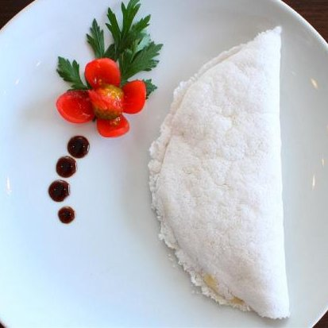

Tapioca

Description
Brazilian Tapioca are these little tortilla-like flatbreads made with goma de mandioca, or “yuca gum”, which is tapioca starch that's been hydrated with water. Brazilian Tapioca, which for obvious reasons us Brazilians just call tapioca hahah, is one of our most prized indigenous heritage dishes.
Ingredients
- 1 lb of Bob's Redmill Tapioca Flour
- 4 cups of cold water
- Pinch of salt
Steps
- Get some Bob's Redmill Tapioca Flour and place it on a dish deep enough to accommodate all the flour plus the water.
- Cover the tapioca with water. The water will bubble as the the tapioca starch starts to absorb it. Wait an hour, or up to overnight, then slowly pour the water out. You'll notice the starch now looks gummy, so we need to dry it.
- Using paper towels, or a clean dish towel, press gently against the gummy paste. I do this a few times, exchanging the paper towels for drier ones.
- When the gum looks chalky, and can be perforated with a fork, break it into chunks.
- Using your hands, break these chunks into a sandy mixture.
- Finally, pass that sandy mixture through a strainer to obtain a finer texture.
- Store the tapioca gum in a zippy bag, or in a glass container. It should last you 5-10 days in the fridge.
- Scoop 1/3 of a cup of the gum into a small nonstick pan and season it with a pinch of salt.
- Cook over medium to high heat, about 2-ish minutes.
- When the gum sticks together it's ready to be flipped. Flip, then cook one more minute on the other side and you're all done.
- Just add your favorite herbs, and drizzle with olive oil to keep it vegan. Or spread some salted butter, or jam, or peanut butter, or seriously ANYTHING!
Return to Main Page